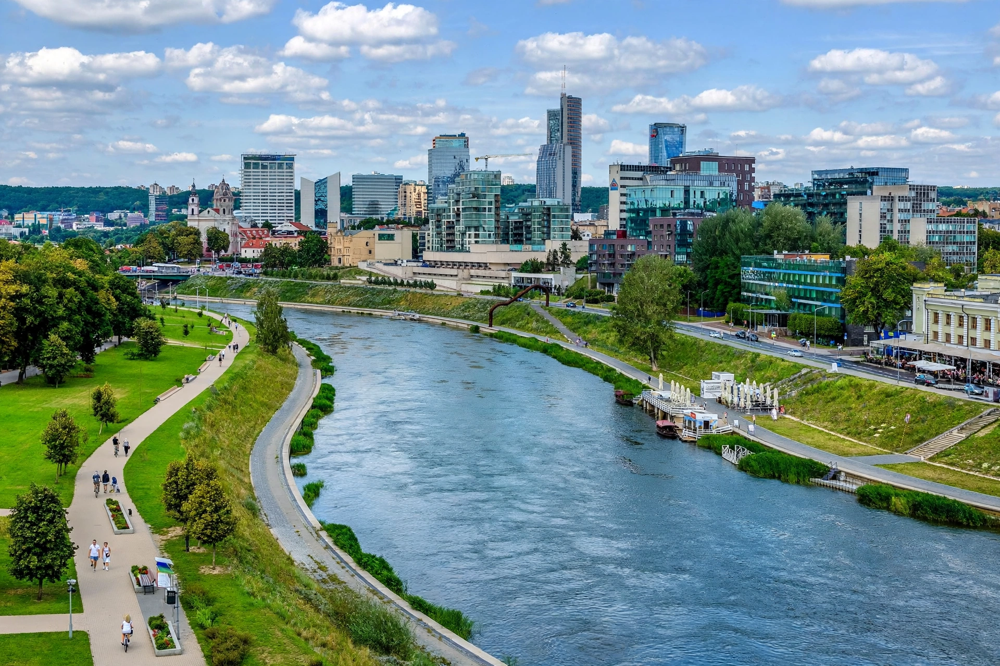

| Neris / Viliya | |
|---|---|
| Countries | Belarus, Lithuania |
| Length | 510 km |
| Mouth | Neman at Kaunas |
| Cities | Vilnius, Jonava, Kaunas |

The Neris (Lithuanian) or Viliya (Belarusian: Вілія) is a river rising in northern Belarus and flowing 510 km through Vilnius into Lithuania, joining the Neman at Kaunas. It is the second-longest river in Lithuania and the largest tributary of the Neman.
From its source in Belarus the river crosses the border, passes Vilnius — where legend says Grand Duke Gediminas founded the city after dreaming by the Neris and Vilnia confluence — and flows northwest to its mouth at Kaunas.
The Belarusian name derives from Vilnius (Vilnia). The scenic Neris Regional Park protects its wooded valley between Vilnius and Kernavė, and the river is celebrated in Lithuanian poetry and song.